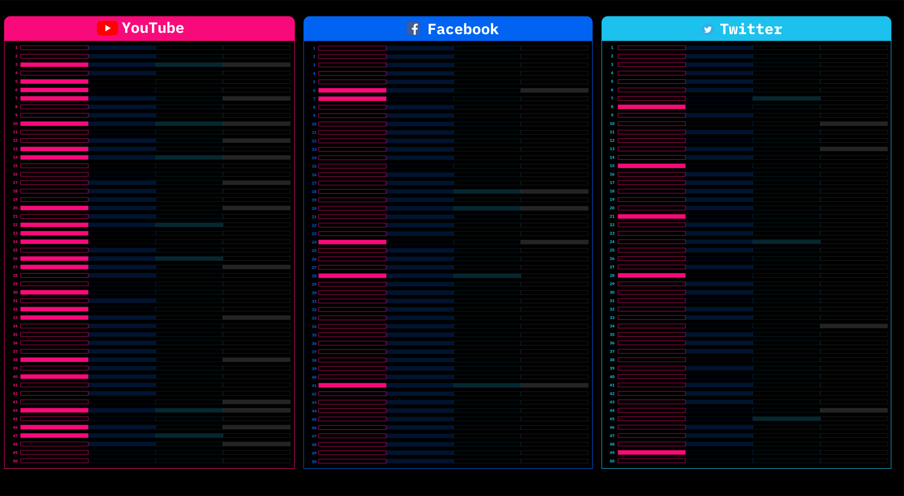
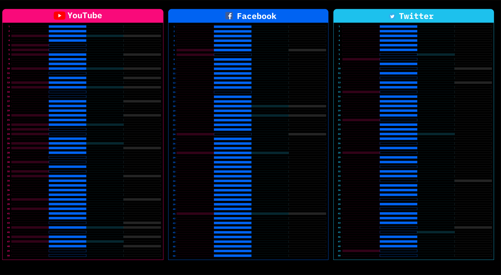
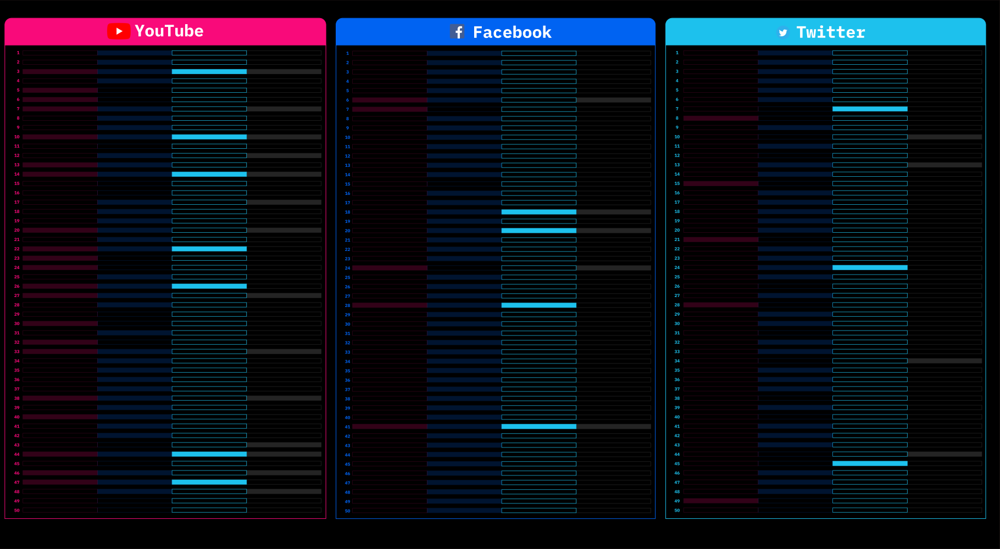
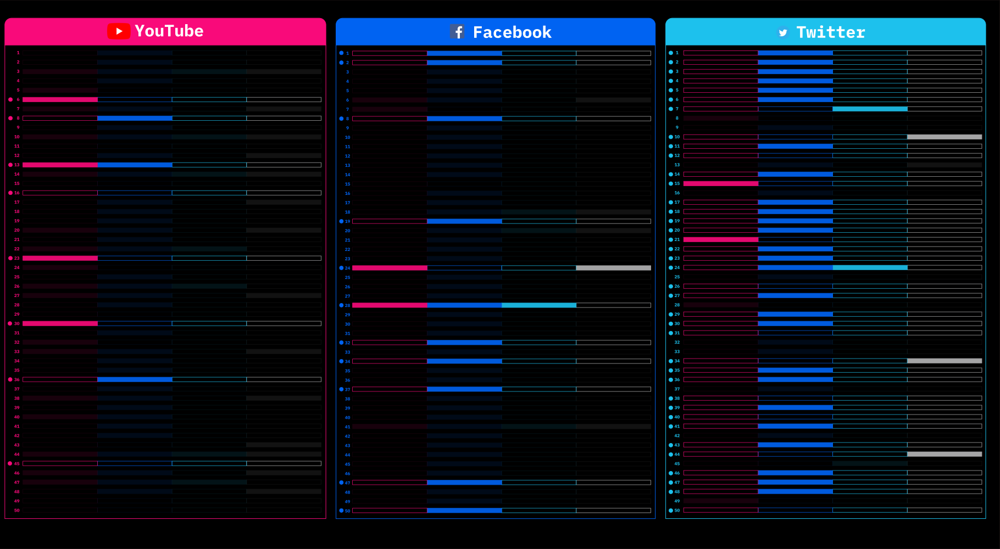

Although some jobs have emphasized the mental impact of content moderators, when we search for "content moderators" on social platforms, there are still many reports of disputes and adverse reports. And most of them are related to Facebook, Youtube, and Twitter. Therefore, the fourth research question aims to study how users on these three platforms view these disputes, especially disputes caused by the platforms where their accounts are.
Red color, representing the posts mentioning Youtube’s disputes of content moderators, appears most frequently on YouTube itself. This shows that these issues are more visible on YouTube, and YouTube users have paid much attention to YouTube’s disputes.
Dark blue, representing the posts mentioning Facebook’s disputes of content moderators, frequently appears on all three platforms, with the highest frequency on Facebook. Therefore, in general, most moderator disputes reports came from Facebook, and Facebook users were also concerned about such issues.
Unlike Facebook, there are generally fewer moderator disputes posts related to Twitter.
Who is speaking for content moderators? Individual users or institutions? The posts with small dots besides represent the posts published by individual users. Compared to the other two platforms, we notice that Twitter has attracted more attention from individual users on these issues.
